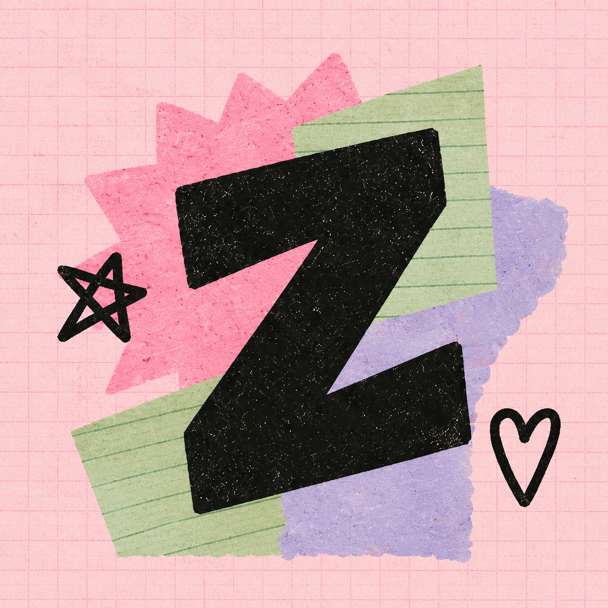

Adaptive masks
The composition survives common launcher crops. Outer scraps may trim; the central Z carries identity.

Squircle
Rounded square
Teardrop
System launch transition
Pink edge-to-edge ground, the supplied mark, no message and no delay; the existing Shelf is the destination.
Your zines
Small hours
8 pages · saved here
Themed icon
The launcher supplies the colour. Zinely supplies one sturdy, handmade silhouette.
Z-only silhouette
No custom splash Activity
No slogan
No minimum duration
No persistent in-app logo
No slogan
No minimum duration
No persistent in-app logo